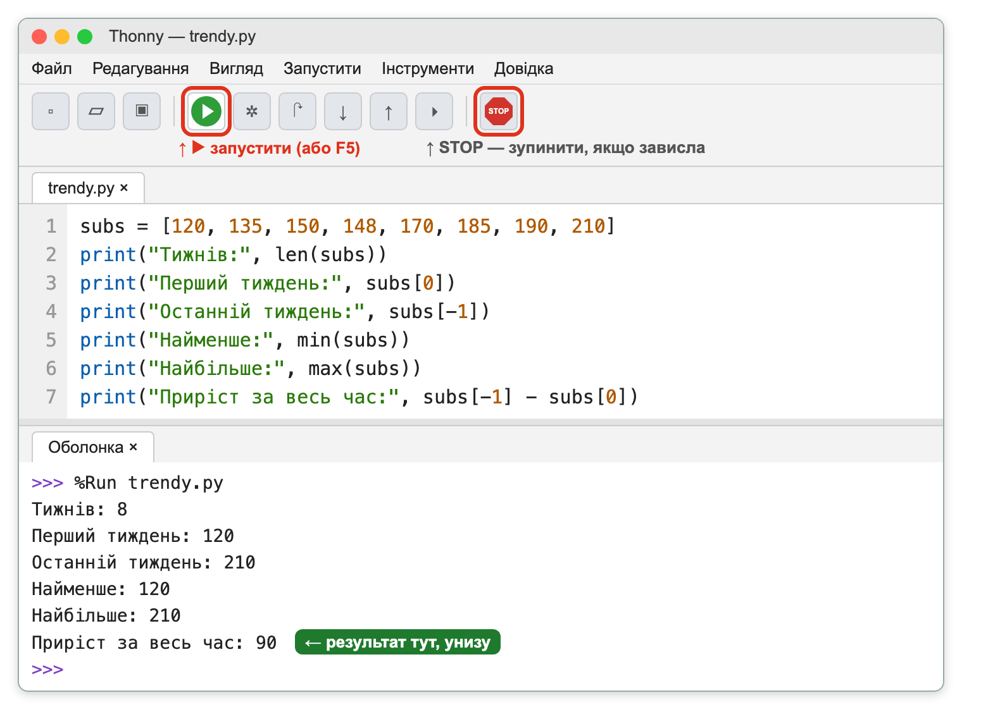
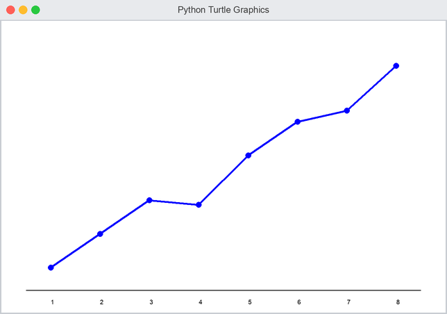
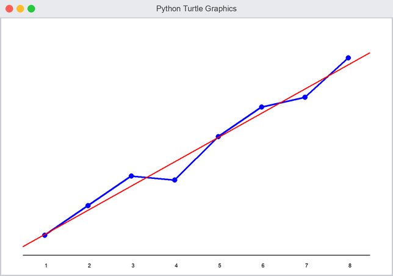

Шкільний YouTube-канал рахує підписників щотижня. Чи канал росте? Скільки буде через місяць? Сьогодні намалюємо графік у Python, побачимо тренд і проведемо лінію тренду — таку саму, як будує Excel. Thonny, файл trendy.py. За урок — 12 балів.
| Слово | Що означає | Приклад |
|---|---|---|
| Ряд даних | числа, виміряні по порядку в часі: щодня, щотижня, щороку | підписники за 8 тижнів: 120, 135, 150, … |
| Тренд | загальний напрям ряду: зростає, спадає або стоїть. Дрібні стрибки не рахуються | за 4-й тиждень стало менше на 2, але загалом канал росте — тренд зростає |
| Лінійна діаграма (графік) | точки ряду, з'єднані лінією по порядку. Саме вона показує тренд | завдання 3 |
| Лінія тренду | пряма y = k · x + b, що проходить «посередині» між точками. k — на скільки в середньому змінюється за один крок | завдання 4 |
| Прогноз | продовжити лінію тренду вперед і подивитися, яке буде значення | скільки підписників буде на 10-му тижні |
| Лінійна | зміни в часі, тренд: температура за тиждень, ціна за рік, підписники |
| Стовпчикова | порівняти окремі величини: скільки учнів у кожному класі |
| Кругова | частки від цілого: на що йдуть кишенькові гроші |

trendy.py.Ряд даних у Python — це список. subs[0] — перший елемент, subs[-1] — останній, len — скільки елементів.
subs = [120, 135, 150, 148, 170, 185, 190, 210]
print("Тижнів:", len(subs))
print("Перший тиждень:", subs[0])
print("Останній тиждень:", subs[-1])
print("Найменше:", min(subs))
print("Найбільше:", max(subs))
print("Приріст за весь час:", subs[-1] - subs[0])Має вивести:
Тижнів: 8 Перший тиждень: 120 Останній тиждень: 210 Найменше: 120 Найбільше: 210 Приріст за весь час: 90
Порівнюємо кожен тиждень з попереднім: subs[i] - subs[i - 1]. Плюс — зросло, мінус — спало. Яких змін більше, такий і тренд. Набери під завданням 1.
up = 0
down = 0
for i in range(1, len(subs)):
change = subs[i] - subs[i - 1]
print("Тиждень", i + 1, ":", change)
if change > 0:
up = up + 1
elif change < 0:
down = down + 1
print("Зростань:", up)
print("Спадів:", down)
if up > down:
print("Тренд: зростає")
elif up < down:
print("Тренд: спадає")
else:
print("Тренду немає")Має вивести:
Тиждень 2 : 15 Тиждень 3 : 15 Тиждень 4 : -2 Тиждень 5 : 22 Тиждень 6 : 15 Тиждень 7 : 5 Тиждень 8 : 20 Зростань: 6 Спадів: 1 Тренд: зростає
На 4-му тижні −2, але це лише стрибок: зростань 6, спадів 1 — тренд зростає.
Малюємо графік черепашкою. Рядок screen.setworldcoordinates(0, 100, 9, 230) робить у вікні «координати діаграми»: зліва направо — тижні від 0 до 9, знизу вгору — підписники від 100 до 230. Тому t.goto(тиждень, значення) одразу ставить точку на своє місце. Набери під завданням 2, а останнім рядком файлу — turtle.done().
import turtle
screen = turtle.Screen()
screen.setworldcoordinates(0, 100, 9, 230)
t = turtle.Turtle()
t.hideturtle()
t.speed(0)
t.penup()
t.goto(0.5, 110)
t.pendown()
t.goto(8.5, 110)
t.penup()
for w in range(1, 9):
t.goto(w, 103)
t.write(w)
t.color("blue")
t.width(3)
for i in range(len(subs)):
t.goto(i + 1, subs[i])
t.pendown()
t.dot(8)
turtle.done()Має вийти (у вікні з малюнком):

Чорна лінія — вісь тижнів 1–8. Синя ламана — ряд даних. Видно, що загалом вона йде вгору.
Лінія тренду — пряма y = k · x + b, від якої точки ряду в сумі відхиляються найменше (так її будує і Excel). mx і my — середній тиждень і середня кількість підписників. Цикл рахує, як разом змінюються тиждень і підписники, — з цього виходить нахил k. Потім b підбирається так, щоб пряма пройшла через середню точку.
Набери ці рядки перед turtle.done() — він має лишитися останнім.
n = len(subs)
mx = (n + 1) / 2
my = sum(subs) / n
top = 0
bottom = 0
for i in range(n):
x = i + 1
top = top + (x - mx) * (subs[i] - my)
bottom = bottom + (x - mx) ** 2
k = top / bottom
b = my - k * mx
print("Лінія тренду: y =", round(k, 2), "* x +", round(b, 2))
print("Прогноз на 10 тиждень:", round(k * 10 + b))
t.penup()
t.color("red")
t.width(2)
t.goto(0.5, k * 0.5 + b)
t.pendown()
t.goto(8.5, k * 8.5 + b)Додатково має вивести:
Лінія тренду: y = 12.29 * x + 108.21 Прогноз на 10 тиждень: 231

k ≈ 12,29 — канал щотижня в середньому отримує ~12 нових підписників. Прогноз: підстав x = 10 у рівняння.
★ Для швидших. Перший рядок заміни на ряд переглядів реклами: subs = [210, 200, 205, 180, 175, 160, 150, 140] і запусти. Який тренд тепер, яке k і який прогноз на 10 тиждень? Прогноз — у тест, питання 6.
Таблиця покаже те саме рівняння, яке порахував Python у завданні 4.
| Що бачиш | Що не так |
|---|---|
IndentationError | Відступ: 4 пробіли всередині for, if, elif, else |
SyntaxError | Забута двокрапка після for, if, elif, else або дужка |
NameError: name 'subs' або 't' | Код набрано вище за той, де створюється subs чи t. Порядок у файлі: завдання 1, 2, 3, 4, а в кінці turtle.done() |
| Вікно з малюнком порожнє, лінії тренду немає | Рядки завдання 4 стоять після turtle.done() — перенеси їх вище |
| Друга спроба не запускається | Закрий вікно з малюнком, тоді знову ▶ |
Впиши відповідь і натисни «Перевірити» або Enter. Перевірити можна лише один раз.
Вивчити, що таке тренд і яка діаграма його показує. Подивитися прогноз погоди на тиждень і на уроці сказати, який тренд у температури: зростає, спадає чи стоїть.